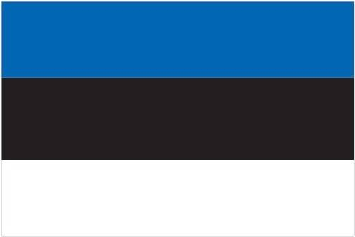

After centuries of Danish, Swedish, German, and Russian rule, Estonia attained independence in 1918. Forcibly incorporated into the USSR in 1940 - an action never recognized by the US and many other countries - it regained its freedom in 1991 with the collapse of the Soviet Union. Since the last Russian troops left in 1994, Estonia has been free to promote economic and political ties with the West. It joined both NATO and the EU in the spring of 2004, formally joined the OECD in late 2010, and adopted the euro as its official currency on 1 January 2011.